Bisa dimainkan sebelum bisa membaca
Blok bergambar dan petunjuk suara untuk usia 4–7. Kode ketik untuk anak yang sudah bisa membaca.
Anak menyusun blok bergambar untuk menuntun Koba, robot kecilnya, dari planet ke planet. Gratis, dalam Bahasa Indonesia dan English.
Untuk iPhone, iPad, Mac, Android, Linux, dan Steam Deck. Semua unduhan
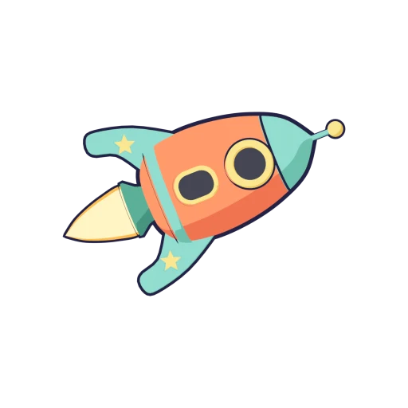
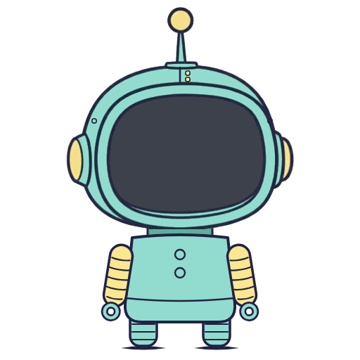
Tur singkat ke planet-planet, blok-bloknya, dan Koba.
Video diputar dari YouTube setelah kamu menekan tombol putar.
Blok bergambar dan petunjuk suara untuk usia 4–7. Kode ketik untuk anak yang sudah bisa membaca.
Setelah tiap teka-teki, Coba Lagi memilih: lanjut, berlatih dengan teka-teki baru, atau petualangan bonus untuk mengulang.
Teka-teki latihan dibuat otomatis dan diperiksa pasti bisa diselesaikan, jadi anak tidak pernah mendapat yang sama dua kali.
Seluruh aplikasi tersedia dalam Bahasa Indonesia dan English, dan bisa diganti kapan saja.
Tanpa iklan, tanpa pelacakan, tanpa akun. Semua data tetap di perangkatmu.
Namanya berarti “coba lagi”: setiap percobaan disambut dengan semangat, tidak pernah dengan kata “salah”.
Beberapa pertanyaan bergambar dengan suara menemukan titik awal yang pas: membaca, kiri dan kanan, pola, dan urutan. Rasanya seperti bermain, bukan ujian. Setelah itu, planet Pemanasan punya permainan ini dan lainnya, ditambah berhitung, warna, dan bentuk, untuk dimainkan dan dikuasai.
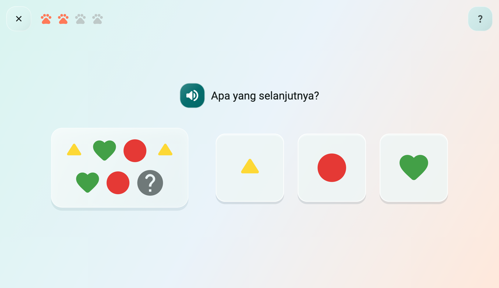
Sembilan planet coding, dari langkah pertama sampai perulangan, blok buatan sendiri, melihat ke depan, Kotak Langkah, membetulkan blok, mengulang sampai bendera, dan memilih apa yang dilakukan kalau tidak. Kapal bintang Koba butuh bintang yang ditebar angin antariksa ke sana, jadi setiap planet dimulai dengan adegan cerita dan contoh singkat; bintang menunjukkan sejauh mana anakmu melangkah, dan planet yang tuntas memberi stiker.
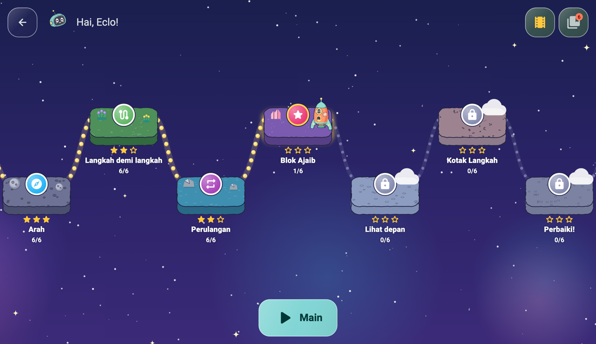
Seret atau ketuk blok, tekan Jalan!, dan lihat Koba bergerak. Bingung? Lampu petunjuk menunjukkan jalannya.
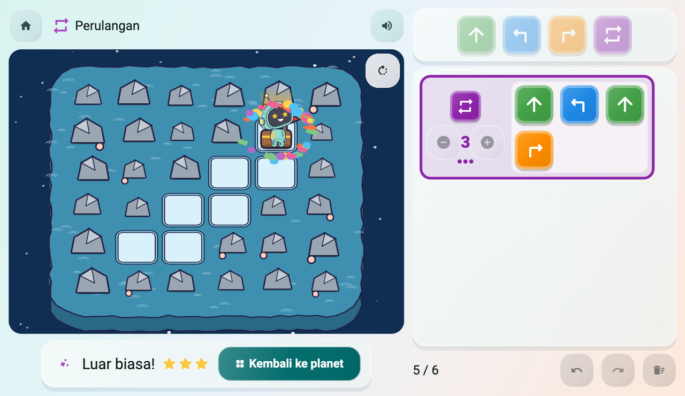
Permainan bergambar di planet Pemanasan, lalu satu konsep coding di setiap planet, satu teka-teki kecil setiap kali.
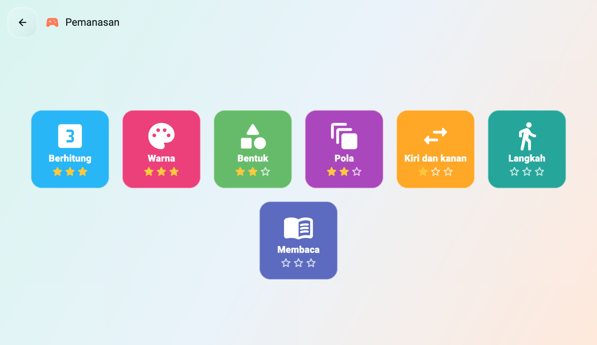
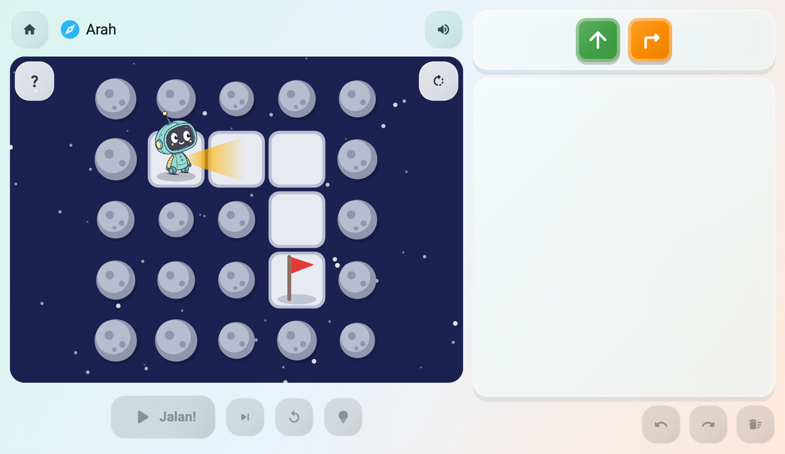
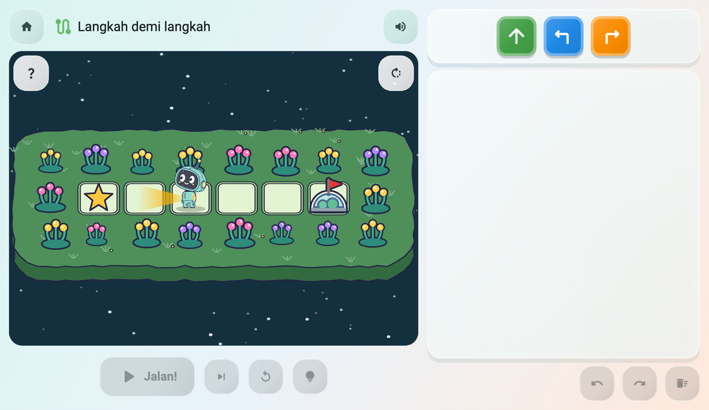
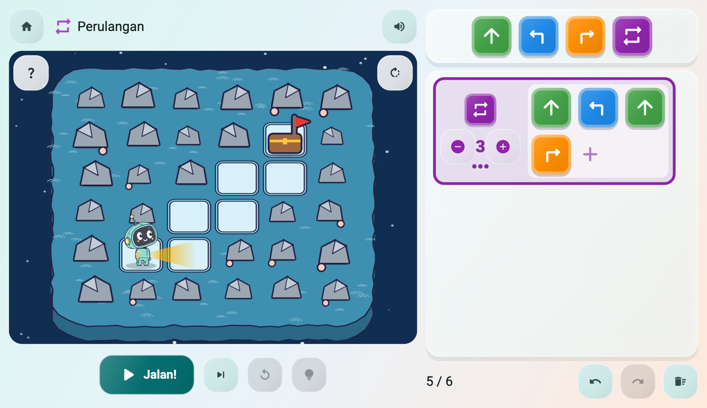
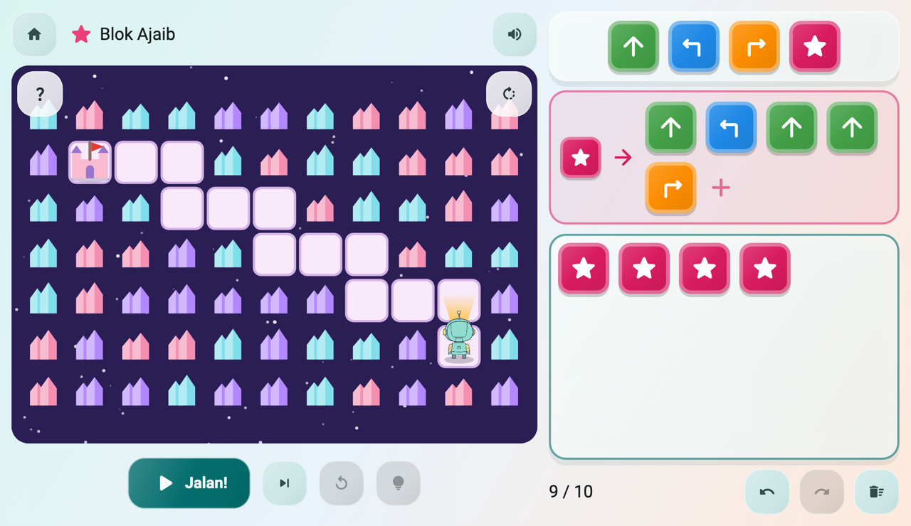
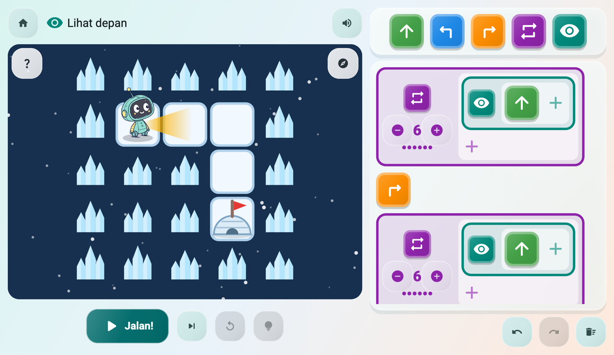
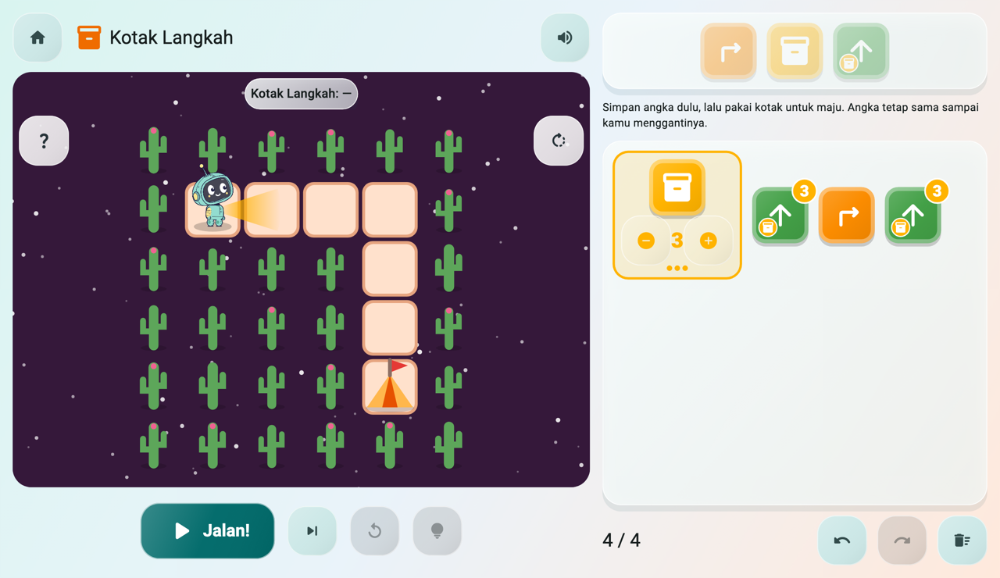
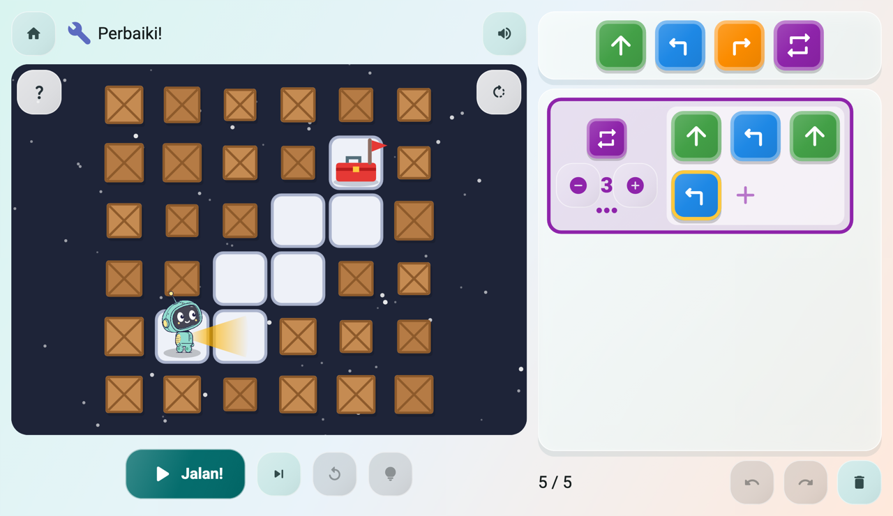
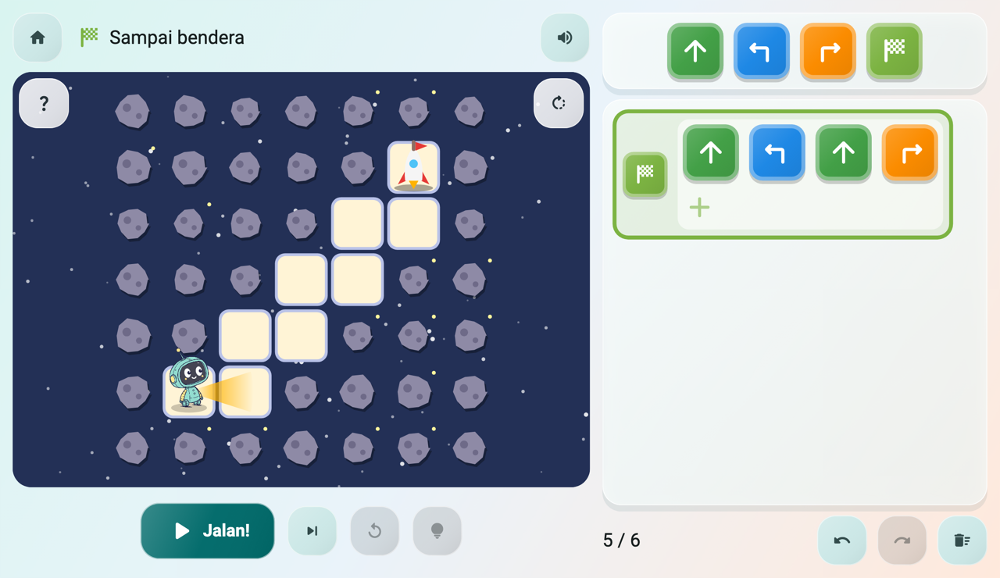
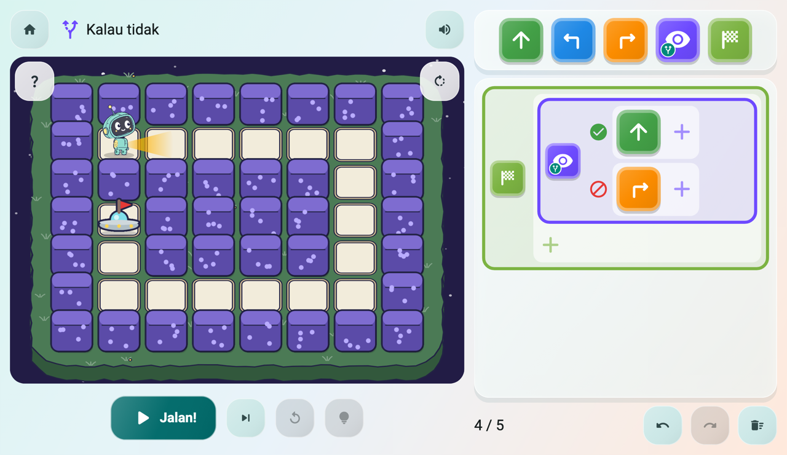
Anak yang sudah bisa membaca mendapat tab Kode di samping blok dan mengetik program yang sama sebagai teks. Orang tua bisa menyalakan atau mematikannya untuk tiap anak.
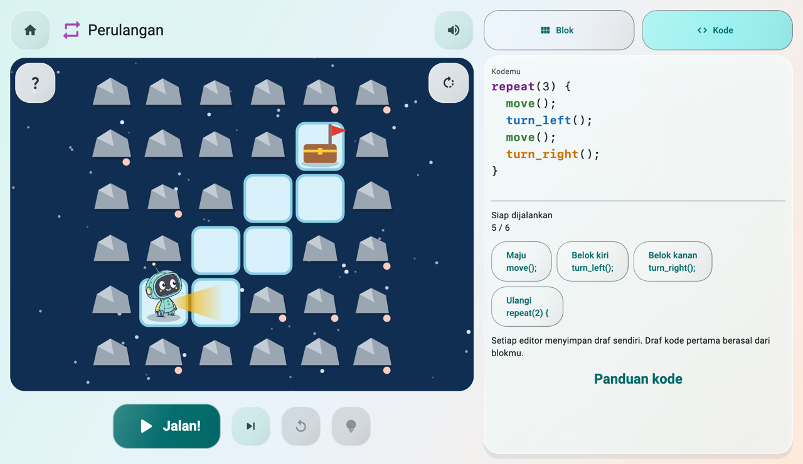
Dibuat untuk tablet, dan sama nyamannya dimainkan di ponsel, tegak maupun miring.
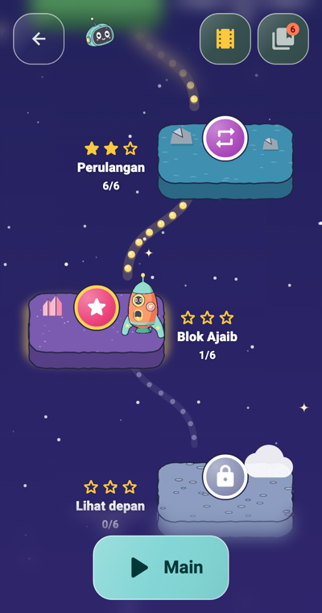
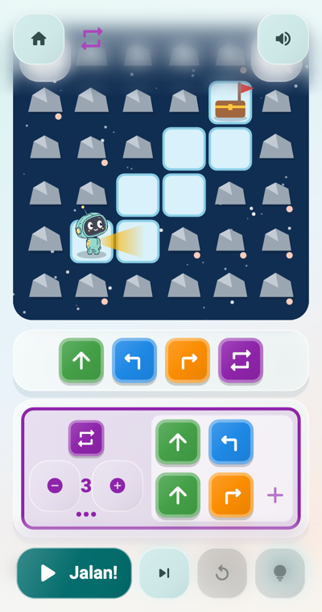
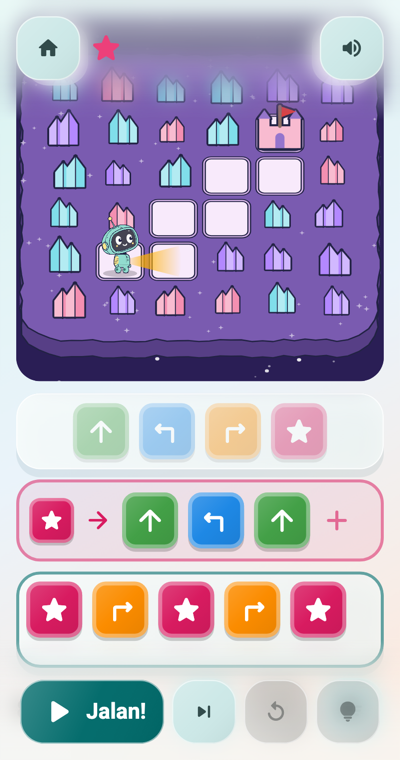
Coba Lagi tidak mengumpulkan data pribadi. Nama panggilan dan progres hanya tersimpan di perangkatmu. Aplikasi versi rilis tidak memiliki akses internet, serta donasi dan tip ditangani oleh Google Play dan App Store (kode untuk aplikasi dari GitHub oleh Dahlunas, toko milik Ardeman). Situs ini juga tidak memakai cookie maupun pelacak.
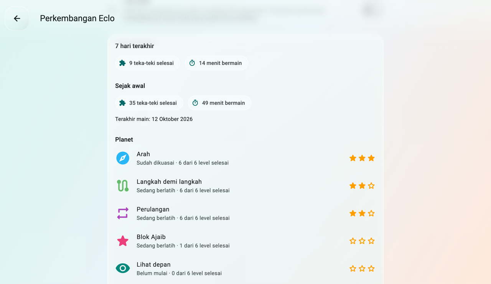
Usia 4 tahun ke atas. Blok bergambar dan petunjuk suara cocok untuk usia 4–7, dan anak yang sudah bisa membaca bisa mengetik kode sungguhan.
Tidak. Setiap petunjuk dibacakan, dan blok-bloknya berupa gambar. Permainan pemanasan singkat menemukan titik awal yang pas.
Ya, tanpa iklan dan tanpa apa pun yang bisa dibeli anak. Gratis untuk satu pemain. Donasi berapa pun (tip di App Store) dari area orang tua membuka fitur sponsor, misalnya hingga enam pemain dan laporan perkembangan.
Tidak. Aplikasi versi rilis tidak memiliki akses internet, jadi bisa dimainkan di mana saja, bahkan di perjalanan.
Hanya nama panggilan, avatar, dan progres tiap pemain, di perangkatmu. Tidak ada akun, dan tidak ada yang dikirim kepada kami. Baca kebijakan privasi.
Segera. Sampai saat itu, setiap versi baru tersedia di GitHub sebagai file APK; lihat Coba sekarang di bawah.
Coba Lagi sudah ada di App Store untuk iPhone, iPad, dan Mac. Sambil menunggu Google Play, setiap versi baru juga tersedia di GitHub.
Satu aplikasi untuk ketiganya, dari App Store.

Google Play segera hadir. Sampai saat itu, pasang file aplikasinya dari GitHub.
Di rilis terbaru, ketuk file yang berakhiran arm64-v8a.apk, yang cocok untuk kebanyakan ponsel dan tablet. Kalau tidak bisa dipasang, ambil yang berakhiran universal.apk.
Unduh untuk AndroidSatu AppImage berjalan di PC Linux dan Steam Deck.
Di PC, ambil CobaLagi-x86_64.AppImage. Di Steam Deck, dalam Mode Desktop, ambil CobaLagi-Steam-Installer.desktop lalu buka: ia menambahkan Coba Lagi ke perpustakaan Steam-mu.
Unduh untuk LinuxMain dengan kontroler. Steam Deck, Xbox, PlayStation, dan kontroler lain bisa dipakai di setiap layar, bahkan untuk menggeser blok. Tanpa perlu menyentuh layar.
Apple, logo Apple, iPhone, iPad, dan Mac adalah merek dagang Apple Inc., yang terdaftar di AS serta negara dan wilayah lain. App Store adalah merek layanan Apple Inc.